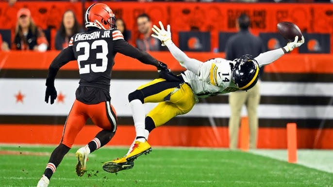
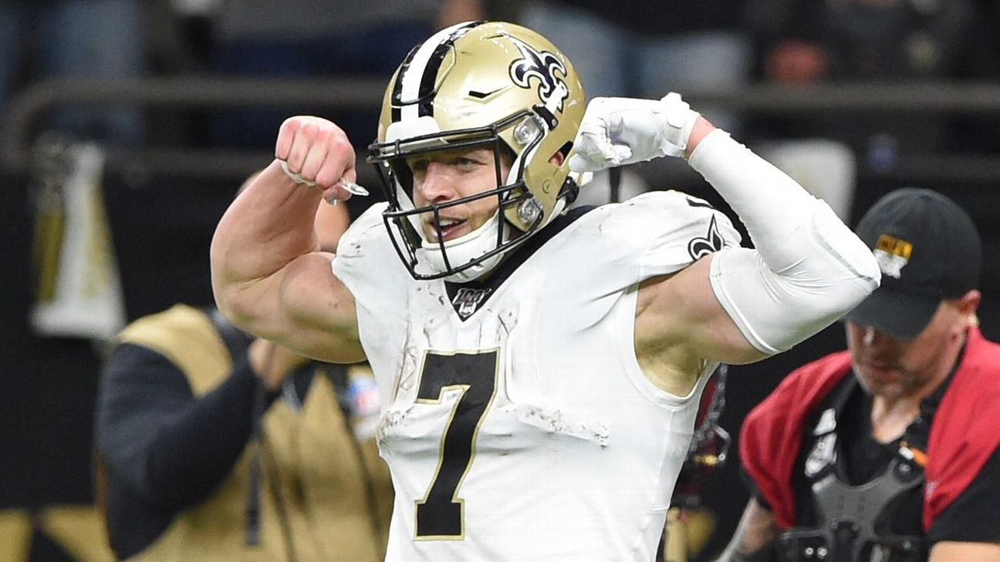
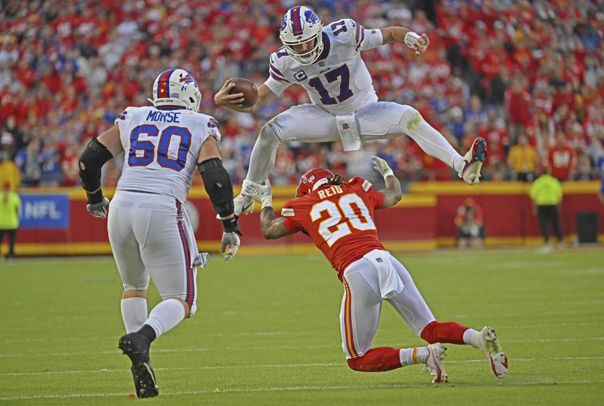

The Diverse Excellence of NFL Stars:
- George Pickens
- Amon-Ra St. Brown
- Taysom Hill
- Josh Allen

The NFL is a league built on the talents of extraordinary athletes who each bring unique skills, stories, and impacts to the field. Among these are George Pickens, Amon-Ra St. Brown, Taysom Hill, and Josh Allen—four players who exemplify the diversity of talent in the league. Though each represents different roles and teams, their contributions highlight the intricacies and beauty of football.
George Pickens: The Rising Star at Wide Receiver
George Pickens, a wide receiver for the Pittsburgh Steelers, has quickly made a name for himself with his spectacular catches and raw athleticism. Drafted in 2022, Pickens has shown flashes of brilliance, blending speed, size, and reliable hands. His knack for making acrobatic plays, often in high-pressure situations, has positioned him as a cornerstone of the Steelers’ future. Despite being relatively new to the NFL, his potential as a deep-threat receiver promises an exciting career.
Amon-Ra St. Brown: The Quietly Dominant Playmaker

Detroit Lions wide receiver Amon-Ra St. Brown is one of the league's most consistent and underrated stars. Selected in the fourth round of the 2021 NFL Draft, St. Brown has exceeded expectations, emerging as a dependable target in the Lions' passing game. Known for his precise route-running and exceptional work ethic, he embodies determination. His ability to find seams in defenses and turn short passes into significant gains makes him a versatile asset for his team and a nightmare for opposing defenses.
Taysom Hill: The Swiss Army Knife of Football
New Orleans Saints utility player Taysom Hill is arguably the NFL’s most versatile athlete. Operating as a quarterback, tight end, wide receiver, and even a running back, Hill defies traditional positional boundaries. His ability to adapt and contribute across various phases of the game makes him a unique weapon for the Saints' offense. Hill’s physicality, speed, and football IQ allow him to thrive in different roles, and his unpredictability forces defenses to account for him on every play.
Josh Allen: The Prototype Quarterback
Josh Allen, quarterback for the Buffalo Bills, stands as one of the NFL’s premier stars. Since being drafted in 2018, Allen has transformed the Bills into perennial contenders. His combination of size, arm strength, and mobility is unparalleled, enabling him to execute dazzling plays both in the air and on the ground. Beyond his physical gifts, Allen’s leadership and competitive spirit have endeared him to fans and teammates alike. His ability to perform under pressure, particularly in high-stakes playoff games, cements his status as one of the league’s elite players.
Shared Dedication, Different Journeys
Though their paths differ, Pickens, St. Brown, Hill, and Allen share an unwavering commitment to their craft. Pickens represents the promise of youth, while St. Brown showcases how work ethic can outshine initial expectations. Hill reminds fans of the game's versatility, and Allen demonstrates how quarterbacks can redefine what it means to lead a team. Each player illustrates a unique facet of what makes football a compelling sport.Impact on the Game and Beyond
Together, these athletes reflect the modern NFL's diverse roles and approaches to the game. From Pickens' high-flying catches to Hill’s jack-of-all-trades skill set, their contributions highlight the league's variety and creativity. Beyond their on-field performances, their stories of overcoming challenges, whether through draft doubts or positional versatility, inspire fans and young athletes striving to emulate their success.A Glimpse into the Future
As they continue to evolve, George Pickens, Amon-Ra St. Brown, Taysom Hill, and Josh Allen represent the promise and innovation of football's future. Their talents, combined with their dedication, ensure their ongoing impact on the game. Through their excellence and individuality, they remind us why football remains America’s most beloved sport.
Back to top